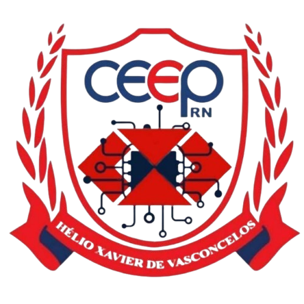

O Portal CEEP é uma plataforma digital criada especialmente para facilitar a vida dos estudantes do Estadual de Educação Profissional (CEEP). Ele funciona como um canal de comunicação entre a escola e os alunos, reunindo as informações mais importantes do ambiente escolar em um só lugar.

O técnico em informática tem conhecimentos amplos na área, podendo atuar em programção, redes e suporte, como também, em áreas como desenvolvimento de sistemas para internet, instalação e suporte de computadores, entre outas.
Técnico de suporte;
Técnico de manutenção de computadores.
Empresas de tecnologia;
Serviços de suporte técnico;
Setor corporativo;
Setor público.
Um(a) técnico(a) em administração é um profissional que atua em diversas áreas uma organização, podendo executar atividades administrativas e gerenciais, apoiando as equipes operacionais e de gestão.
Auxiliar de Pessoal;
Auxiliar de Recursos Humanos;
Auxiliar de Tesouraria;
Auxiliar Financeiro;
Assistente de Marketing.
Empresas privadas;
Organições do terceiro setor (ONGs, Fundações, Entidades, Beneficentes...)
Órgãos públicos (Instituição específica dentro da organição do estado, ex: Prefeitura, secretarias) e Instituição do estado (ex: prefeitura, secretarias)
Indústrias;
Comércio geral;
Prestação de serviços.